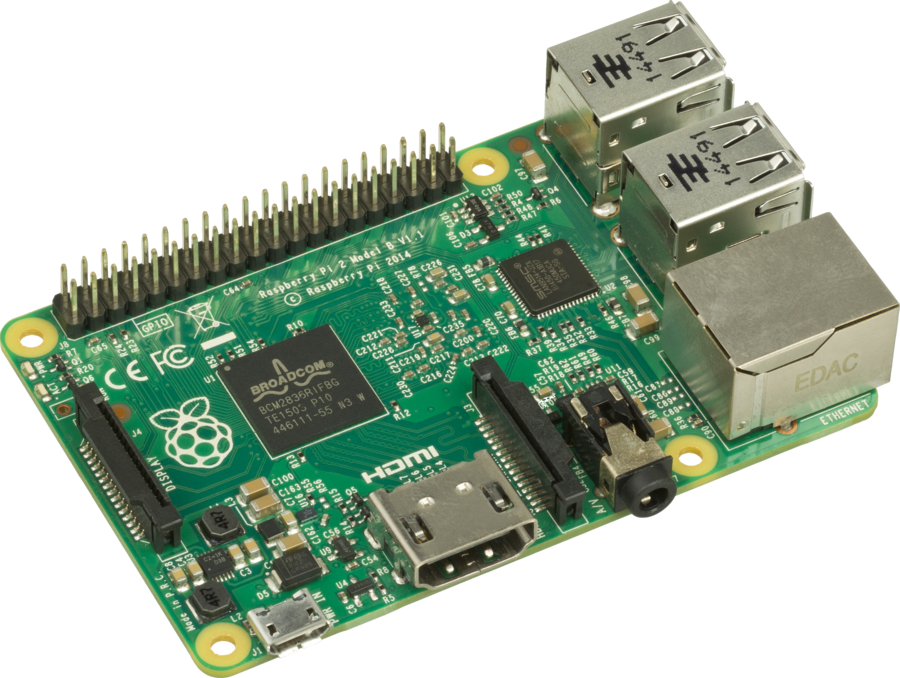

4K · NO ENCLOSURE

BWC-2005 — Fully Exposed, No Case, All 40 Pins
14,206,511 views▲ 98% (231K)Uploaded by BareMetalDaddy
Bare MetalGPIOOverclockedPassive CoolingAmateur
Model Specs
Model BWC-2005
Cores 4, all exposed
RAM 8GB, unbuffered
Header 40-pin, fully populated
Enclosure None
Status HOT (86°C)
Download Firmware
Boards near you →
12:04REBOOTING
BWC-2005 reboots again and again
3.1M views · 97%
41:19UPGRADING
Firmware flashed live, no rollback
8.4M views · 99%
06:58RMA
Sent back to the factory (rough)
1.9M views · 94%
22:10OVERCLOCKED
She can't handle 3.2 GHz
5.5M views · 98%
15:33DUAL BOOT
Two operating systems, one board
6.0M views · 96%
09:47FACTORY RESET
Wiped clean, first boot again
2.7M views · 95%